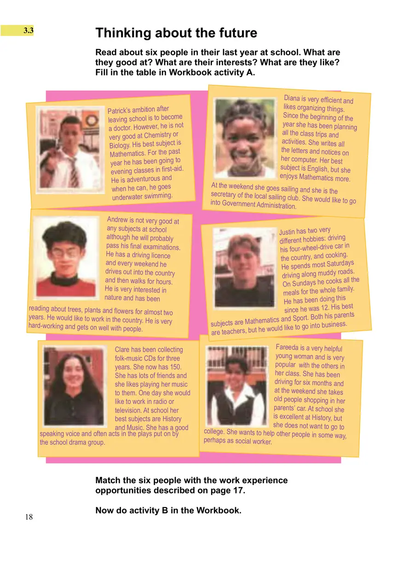

3.3 Thinking about the future Read about six people in their last year at school. What are they good at? What are their interests? What are they like? Fill in the table in Workbook activity A.
Patrick's ambition after leaving school is to become a doctor. However, he is not very good at Chemistry or Biology. His best subject is Mathematics. For the past year he has been going to evening classes in first-aid. He is adventurous and when he can, he goes underwater swimming. Diana is very efficient and likes organizing things. Since the beginning of the year she has been planning all the class trips and activities. She writes all the letters and notices on her computer. Her best subject is English, but she enjoys Mathematics more. At the weekend she goes sailing and she is the secretary of the local sailing club. She would like to go into Government Administration. Andrew is not very good at any subjects at school although he will probably pass his final examinations. He has a driving licence and every weekend he drives out into the country and then walks for hours. He is very interested in nature and has been reading about trees, plants and flowers for almost two years. He would like to work in the country. He is very hard-working and gets on well with people. Justin has two very different hobbies: driving his four-wheel-drive car in the country, and cooking. He spends most Saturdays driving along muddy roads. On Sundays he cooks all the meals for the whole family. He has been doing this since he was 12. His best subjects are Mathematics and Sport. Both his parents are teachers, but he would like to go into business. Clare has been collecting folk-music CDs for three years. She now has 150. She has lots of friends and she likes playing her music to them. One day she would like to work in radio or television. At school her best subjects are History and Music. She has a good speaking voice and often acts in the plays put on by the school drama group. Fareeda is a very helpful young woman and is very popular with the others in her class. She has been driving for six months and at the weekend she takes old people shopping in her parents' car. At school she is excellent at History, but she does not want to go to college. She wants to help other people in some way, perhaps as social worker. Match the six people with the work experience opportunities described on page 17. Now do activity B in the Workbook.
as social worker دون أداة تنكير a آخر فقرة فريدة في الطبعة الرسمية وحُفظت حرفياً؛ كما تتضمن البطاقات أمثلة المضارع التام المستمر (has been going / planning / reading / collecting / driving) المقررة في 3.5.[
{
"letter": "1",
"word": "Patrick (first-aid classes, wants to be a doctor)",
"ar": "باتريك",
"answer": "WEO 2"
},
{
"letter": "2",
"word": "Andrew (loves nature, trees, plants; driving licence)",
"ar": "أندرو",
"answer": "WEO 6"
},
{
"letter": "3",
"word": "Clare (radio/TV, 150 CDs, school drama group)",
"ar": "كلير",
"answer": "WEO 5"
},
{
"letter": "4",
"word": "Diana (organizing, computer notices, Govt Administration)",
"ar": "ديانا",
"answer": "WEO 8"
},
{
"letter": "5",
"word": "Justin (4WD driving, cooking, go into business)",
"ar": "جاستن",
"answer": "WEO 3"
},
{
"letter": "6",
"word": "Fareeda (driving 6 months, helps old people, social worker)",
"ar": "فريدة",
"answer": "WEO 7"
}
][
{
"num": 1,
"question": "Patrick",
"model_answer": "Ambition: to become a doctor | Best subjects: Mathematics (not good at Chemistry/Biology) | Interests/activities: first-aid evening classes, underwater swimming | Character: adventurous",
"explain_ar": "مأخوذ مباشرة من بطاقة باتريك الأولى في ص 18."
},
{
"num": 2,
"question": "Andrew",
"model_answer": "Ambition: to work in the country | Best subjects: not very good at any subjects (will probably pass finals) | Interests/activities: driving out into country, walking for hours, reading about trees/plants/flowers | Character: very hard-working, gets on well with people",
"explain_ar": "من بطاقة أندرو في الصف الأوسط يساراً."
},
{
"num": 3,
"question": "Clare",
"model_answer": "Ambition: to work in radio or television | Best subjects: History and Music | Interests/activities: collecting folk-music CDs (150), playing music to friends, acting in drama group | Character: friendly (lots of friends), good speaking voice",
"explain_ar": "من بطاقة كلير أسفل اليسار."
},
{
"num": 4,
"question": "Diana",
"model_answer": "Ambition: to go into Government Administration | Best subjects: English (and enjoys Mathematics more) | Interests/activities: organizing class trips/activities, typing letters on computer, sailing (club secretary) | Character: very efficient",
"explain_ar": "من بطاقة ديانا أعلى اليمين."
},
{
"num": 5,
"question": "Justin",
"model_answer": "Ambition: to go into business | Best subjects: Mathematics and Sport | Interests/activities: driving four-wheel-drive car along muddy roads, cooking family meals on Sundays | Character: varied hobbies, independent/practical",
"explain_ar": "من بطاقة جاستن في الصف الأوسط يميناً."
},
{
"num": 6,
"question": "Fareeda",
"model_answer": "Ambition: help other people, perhaps as social worker | Best subjects: excellent at History | Interests/activities: driving, taking old people shopping at the weekend | Character: very helpful, very popular",
"explain_ar": "من بطاقة فريدة أسفل اليمين."
}
][
{
"num": 1,
"prompt": "1 to be liked by other people: ______",
"answers": [
"popular"
]
},
{
"num": 2,
"prompt": "2 works well, without wasting time or energy: ______",
"answers": [
"efficient"
]
},
{
"num": 3,
"prompt": "3 very, very good: ______",
"answers": [
"excellent"
]
},
{
"num": 4,
"prompt": "4 spare-time interests: ______",
"answers": [
"hobbies"
]
},
{
"num": 5,
"prompt": "5 to organize and perform a play: ______",
"answers": [
"put on"
]
},
{
"num": 6,
"prompt": "6 to be successful in a test: ______",
"answers": [
"pass"
]
}
]{
"pb_text_vs_image": "طُوبقت البطاقات الست في PB ص 18 مع صورة pb-20.png: أُصلح تقطّع الأسطر التي خلّفها pdftotext بين الأعمدة المائلة لكل شخصية، وحُفظت الصيغة المطبوعة 'as social worker' دون أداة تنكير حرفياً.",
"wb_ocr_vs_image": "قُورنت صفحتا WB ص 31–32 مع tesseract.js eng: أخرجت OCR رقم '33 A'، وصُحّح إلى '3.3 A' بصرياً من wb-032.png وwb-033.png."
}